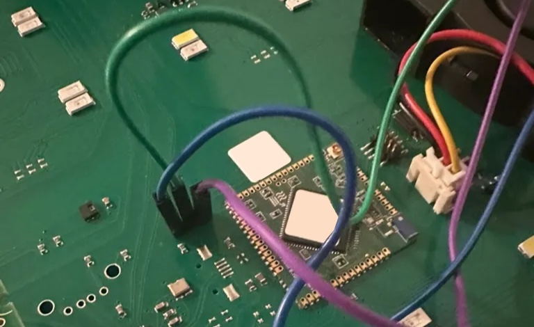
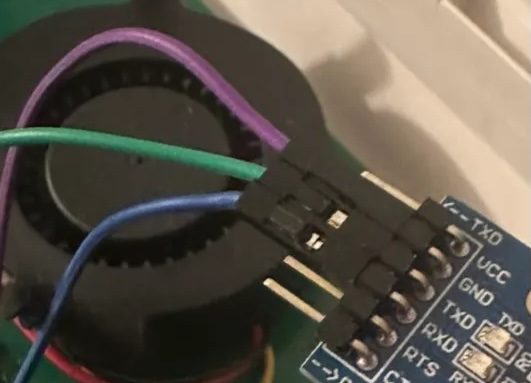

Hardware e
collegamenti.
La base fisica del controllo locale: cosa c’è nella serra, cosa fa il Raspberry Pi e come collegare in sicurezza la console seriale.
IL DISPOSITIVO
La serra Linfa Weezy
La serra è basata su un VoCore2, un piccolo modulo con CPU MIPS e Linux personalizzato (kernel 3.18 e BusyBox). Gestisce direttamente il pannello LED, le ventole, la pompa principale, le tre pompe dei nutrienti, l’anello LED RGB e la rete Wi-Fi integrata.
Il modulo espone una console root tramite UART, usata per la comunicazione con il Raspberry.
Il progetto non modifica il firmware: i comandi vengono eseguiti durante il funzionamento.
Per approfondire il modulo: specifiche VoCore2
IL CONTROLLER
Raspberry Pi
Il Raspberry Pi è il controller esterno e il punto di integrazione con MQTT e Home Assistant. Può collegarsi alla rete domestica tramite Ethernet o Wi-Fi.
Il suo ruolo nel sistema
- Comunica con la serra via USB → UART.
- Esegue la CLI e il bridge MQTT.
- Applica le policy, come la disabilitazione della Wi-Fi della serra all’avvio.
- Pubblica stati e comandi su MQTT.
IL COLLEGAMENTO
Adattatore USB → TTL
Per accedere alla console UART del VoCore serve un adattatore seriale a livelli logici di 3,3 V. Sono comunemente usati FTDI FT232RL / FT232-AZ, Silicon Labs CP2102 / CP2104 e CH340 / CH341.
CONNESSIONE FISICA
Cablaggio UART
Collega la massa in comune e incrocia le linee di trasmissione e ricezione. Verifica sempre i pin sulla tua scheda prima di collegare l’adattatore.


PRIMA DI PROSEGUIRE
Verifica la porta seriale
Una volta collegato l’adattatore al Raspberry, il dispositivo compare di solito come /dev/ttyUSB0, /dev/ttyUSB1 o, con alcuni adattatori, /dev/ttyACM0.
ls -l /dev/ttyUSB* /dev/ttyACM*È normale che uno dei due pattern non trovi alcun dispositivo: l’altro deve mostrare una porta seriale.
Note di compatibilità
- FTDI e CP210x sono generalmente più stabili su Linux.
- CH340 funziona correttamente ma può richiedere driver sui sistemi non Linux.
- Il nome del dispositivo può cambiare tra riavvii: lo script serra usa un percorso configurabile.